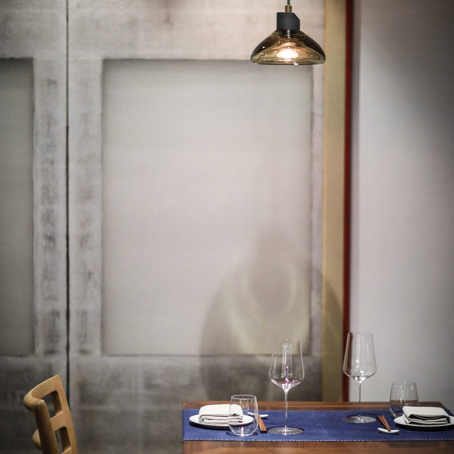
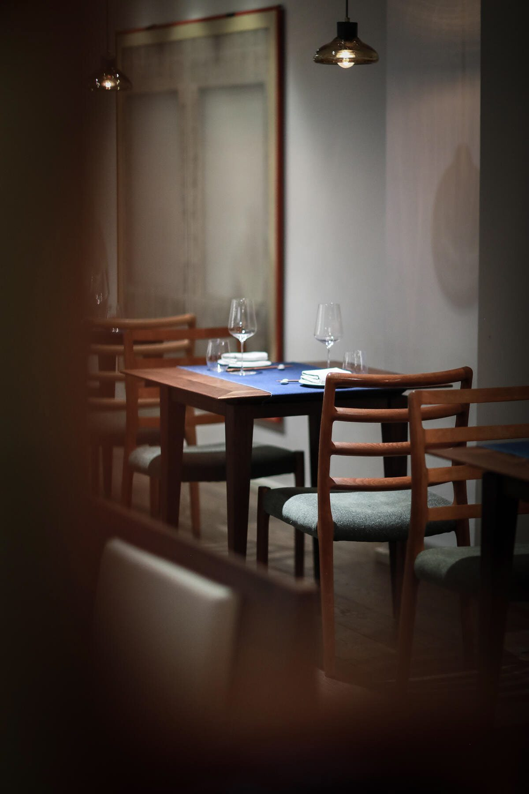
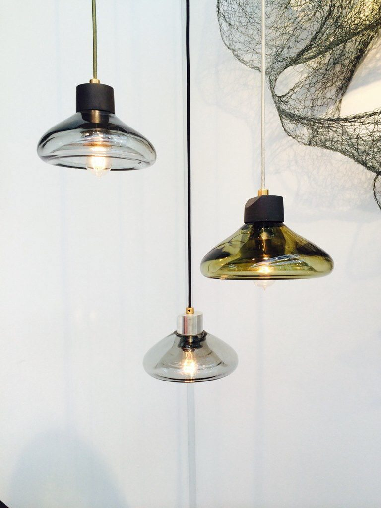

Lighting / 2014
The Boolean Lamp and Pendant
Industrial design, product design
A hand blown pendant and table lamp built from a boolean intersection of two primitive forms.
A lamp and pendant family developed in house, taking its geometry from the boolean intersection of two primitive volumes. Produced in hand blown glass and later scaled into the Kuma's West Loop interior.
Details
- Year
2014 - Location
Chicago, IL - Category
Lighting - Materials
Hand blown glass, metal
Index


